AGTA19
Australasian Genomic Technologies Association conference 2019
Last built: 2020-09-01 17:55:07
| Parameter | Value |
|---|---|
| hashtag | #agta19 |
| start_day | 2019-10-07 |
| end_day | 2019-10-09 |
| timezone | Australia/Melbourne |
| theme | theme_light |
| accent | #f7931e |
| accent2 | #FBC98E |
| kcore | 2 |
| topics_k | 6 |
| bigram_filter | 3 |
| fixed | TRUE |
| seed | 1 |
Introduction
An analysis of tweets from the #agta19 hashtag for the Australasian Genomic Technologies Association conference 2019.
A total of 1081 tweets from 255 users were collected using the rtweet R package.
1 Timeline
1.1 Tweets by day
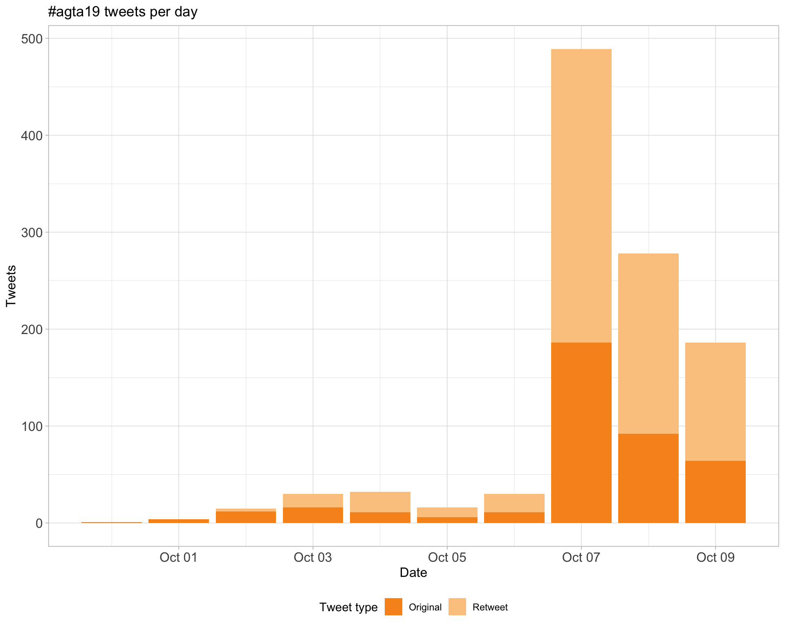
1.2 Tweets by day and time
Filtered for dates 2019-10-07 - 2019-10-09 in the Australia/Melbourne timezone.
2 Users
2.1 Top tweeters
Overall
Original
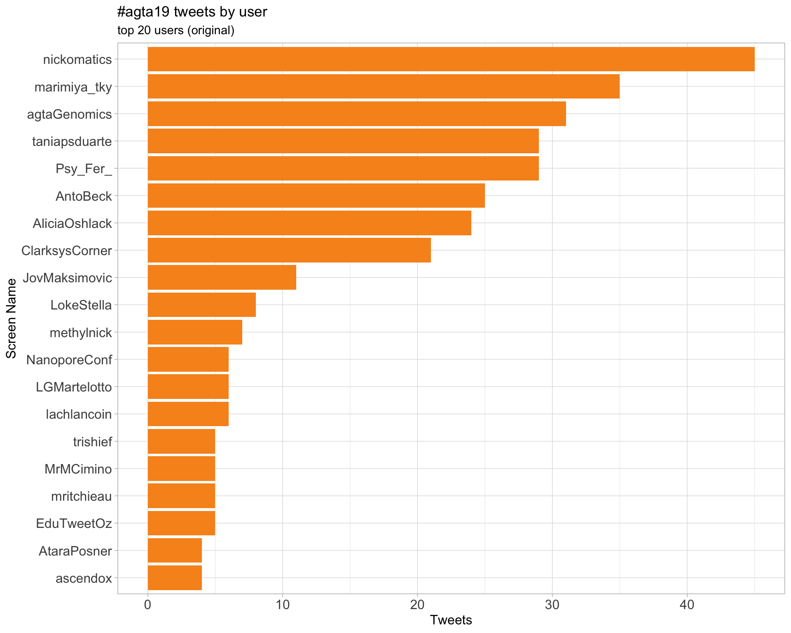
Retweets
2.2 Retweet proportion
2.3 Top tweeters timeline
2.4 Top tweeters by day
Overall
Day 1
Day 2
Day 3
Original
Day 1
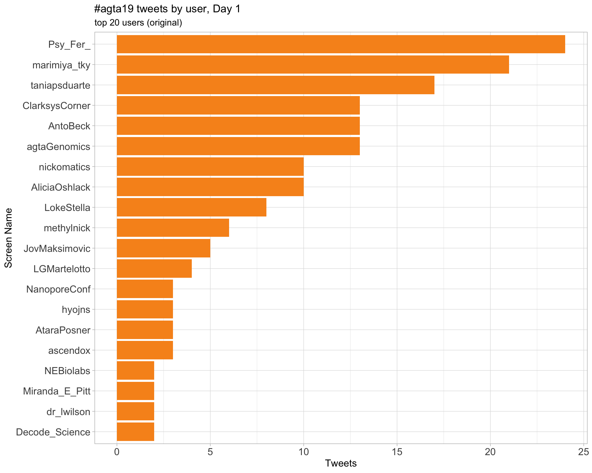
Day 2
Day 3
Retweets
Day 1
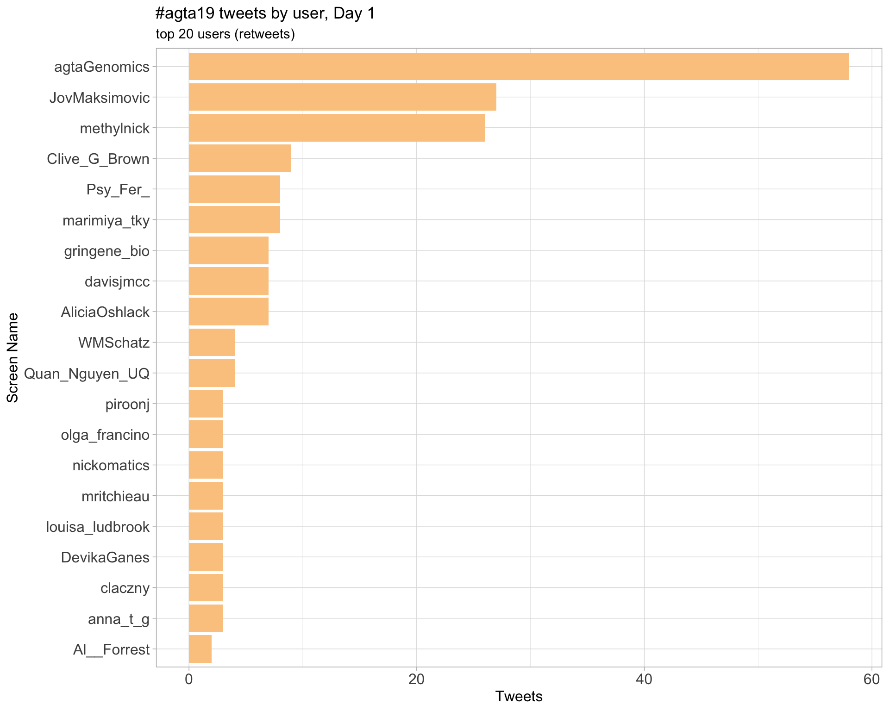
Day 2
Day 3
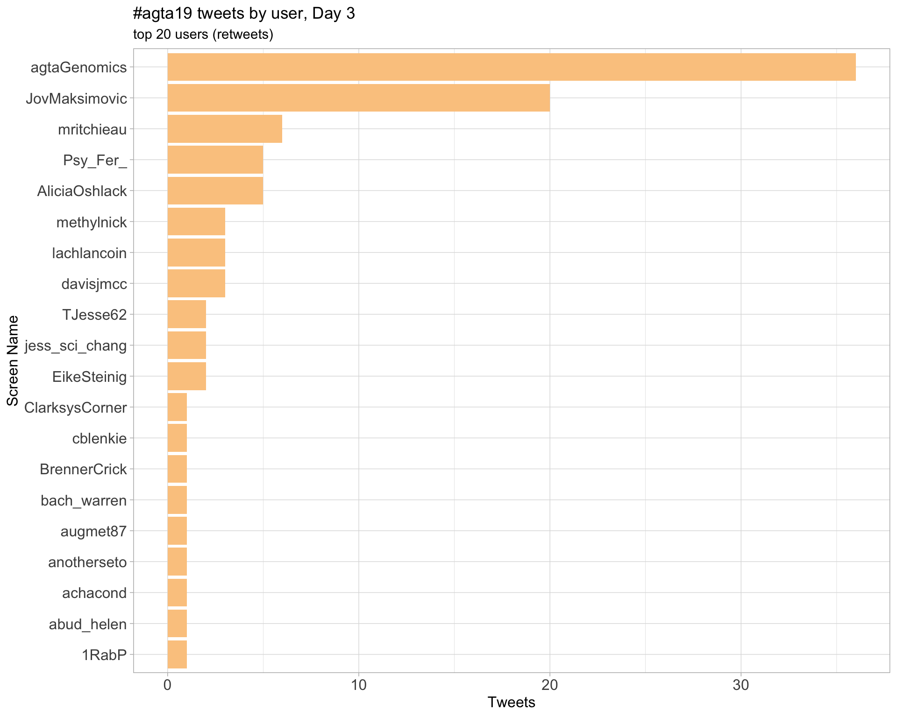
3 Sources
Users
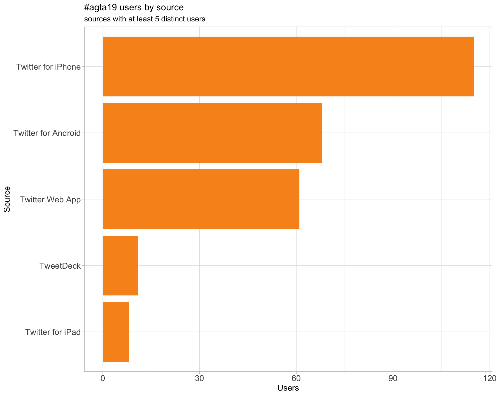
Tweets
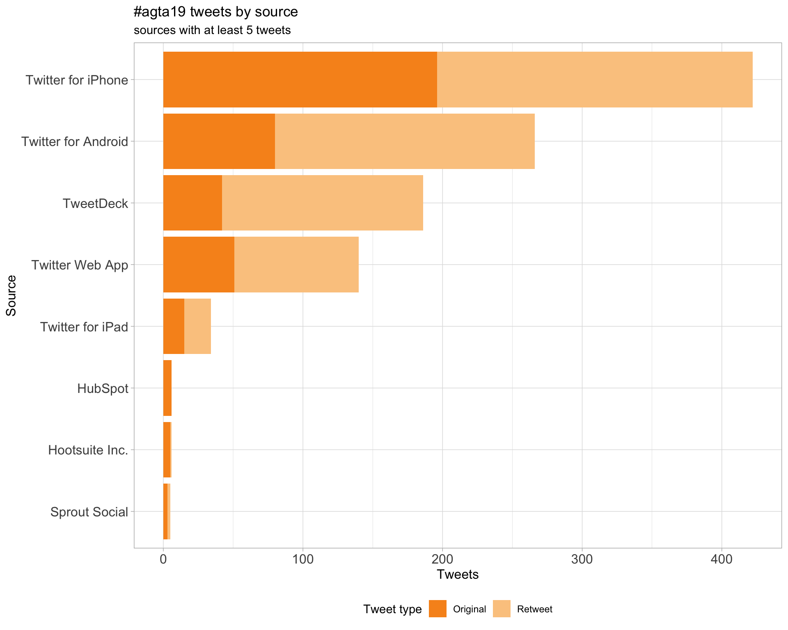
4 Networks
4.1 Replies
The “replies network”, composed from users who reply directly to one another, coloured by PageRank.
4.2 Mentions
The “mentions network”, where users mention other users in their tweets. Filtered for a k-core of 2. Node colour and size adjusted according to PageRank score.
5 Tweet types
5.1 Retweets
Proportion

Count
Top 10
| screen_name | text | retweet_count |
|---|---|---|
| LokeStella | I love this poster. Short and to the point. #agta19 #BAZAM https://t.co/rsLrSz6vtQ | 19 |
| ClarksysCorner | UNCALLED - signal level aligner for Read-until on Nanopore from @mike_schatz lab https://t.co/wj0UxawsUb #AGTA19 | 17 |
| marimiya_tky | BGI’s single cell platform, releasing in the end of this month. #agta19 https://t.co/H1ZTowNOsw | 14 |
| agtaGenomics | #agta19 starts on Monday. Program here https://t.co/96TqN6SYAb https://t.co/z5IyLzgsKT | 12 |
| ClarksysCorner | 100 tomato genomes in 100 days from @mike_schatz is a great illustration of the enormous improvements in @nanopore sequencing and the work that is now possible with it #AGTA19 | 12 |
| ClarksysCorner | Sc_mixology: @mritchieau describes CellBench, a platform for quickly benchmarking different scRNA-seq tools. Which is needed because there are A LOT of scRNA-seq tools. https://t.co/ngj2d8G4O8 #agta19 | 11 |
| ClarksysCorner | Hasindu Gamaarachchi @Hasindu2008 showing how he has developed portable genome analysis methods to go with @nanopore portable genome sequencing. Running Minimap2 and Nanopolish on a mobile phone. Very cool. #agta2019 | 11 |
| AliciaOshlack | Yay! Time for @BelindaPhipson talking about her new method “Propeller” for testing for differences in cell type proportions in single-cell RNA-seq #agta19 | 10 |
| AliciaOshlack | #agta19 @shaniAmare presents https://t.co/7Eldp1XYRA with nearly 300 long read analysis tools. Inspired by @_lazappi_ https://t.co/5TMUY3CC31 | 10 |
| marimiya_tky | Come to poster 31, @Hasindu2008 made a tool on #NVIDIA Jetson running #nanopore data with nanopolish, minimap2, samtool and nanopolish methylation call! #agta19 https://t.co/vlEyhjvysH | 10 |
Most retweeted
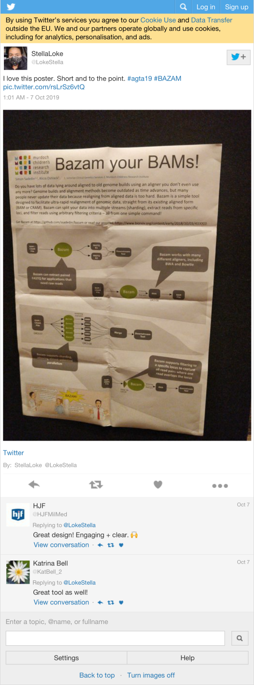
5.2 Likes
Proportion
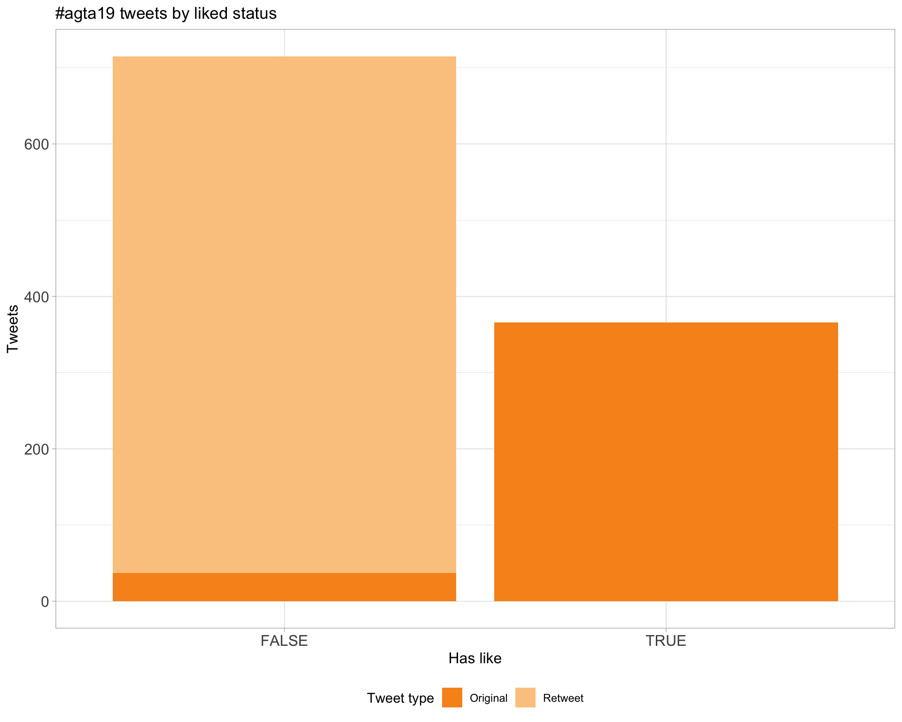
Count
Top 10
| screen_name | text | favorite_count |
|---|---|---|
| ClarksysCorner | 100 tomato genomes in 100 days from @mike_schatz is a great illustration of the enormous improvements in @nanopore sequencing and the work that is now possible with it #AGTA19 | 45 |
| LokeStella | I love this poster. Short and to the point. #agta19 #BAZAM https://t.co/rsLrSz6vtQ | 43 |
| ClarksysCorner | UNCALLED - signal level aligner for Read-until on Nanopore from @mike_schatz lab https://t.co/wj0UxawsUb #AGTA19 | 41 |
| mike_schatz | Really excited to be in Melbourne for the @agtaGenomics conference! Thanks for the invite @AliciaOshlack!!! #agta19 https://t.co/x6VF7CoykV | 37 |
| Miranda_E_Pitt | What on earth is Pandoraea fibrosis?! Come find out at poster 16 #agta19 https://t.co/2DxLyF9eFd | 33 |
| ClarksysCorner | Sc_mixology: @mritchieau describes CellBench, a platform for quickly benchmarking different scRNA-seq tools. Which is needed because there are A LOT of scRNA-seq tools. https://t.co/ngj2d8G4O8 #agta19 | 32 |
| marimiya_tky | Come to poster 31, @Hasindu2008 made a tool on #NVIDIA Jetson running #nanopore data with nanopolish, minimap2, samtool and nanopolish methylation call! #agta19 https://t.co/vlEyhjvysH | 30 |
| ClarksysCorner | Jafar @jafarjabbari outlining our method for long-read scRNA-seq with Nanopore sequencing to identify full-length transcripts and isoforms #agta19 | 29 |
| AliciaOshlack | I don’t think I could work in an area of climate science and climate change. Too depressing. Much rather cancer #agta19 | 27 |
| AliciaOshlack | Yay! Time for @BelindaPhipson talking about her new method “Propeller” for testing for differences in cell type proportions in single-cell RNA-seq #agta19 | 27 |
Most likes
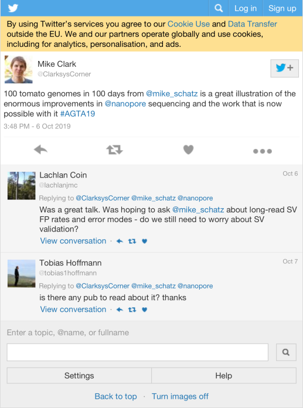
5.3 Quotes
Proportion
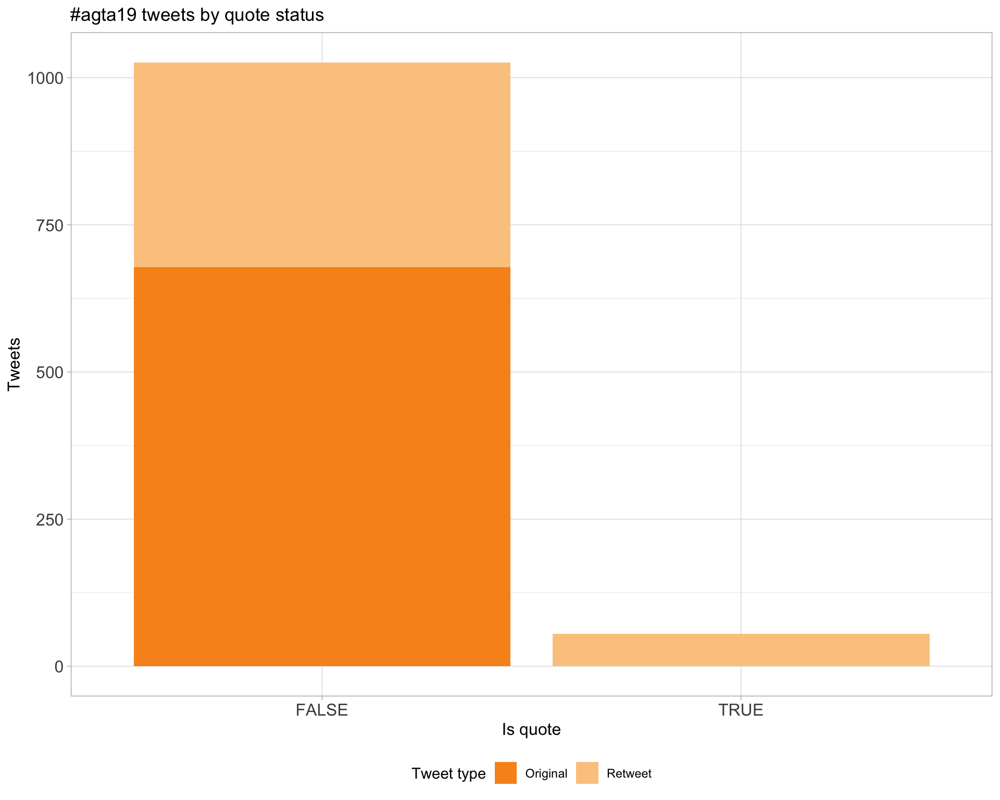
Count
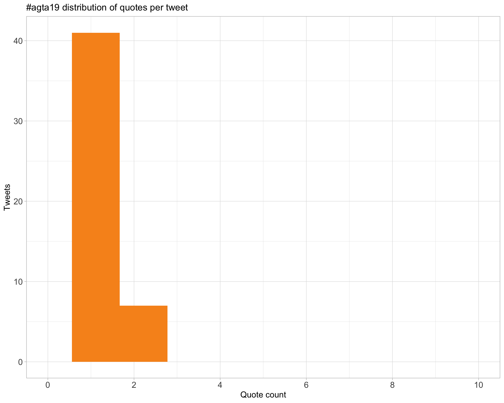
Top 10
| screen_name | text | quote_count |
|---|---|---|
| taniapsduarte | This is me in the next 2 weeks in #Melbourne. See you at #agta19! https://t.co/7iRHzHYYTj https://t.co/9COsfwm1OQ | 2 |
| AliciaOshlack | It’s going to be fun. Looking forward to it #agta19 https://t.co/XAe8F7HDyU | 2 |
| agtaGenomics | #agta19 https://t.co/XTXokBAayG | 2 |
| nickomatics | I never knew there were >15k named varieties of tomato! And evidently structural variants play a major role in quantitative variation. #agta19 https://t.co/4CBGoGGelg | 2 |
| taniapsduarte | #agta19 https://t.co/C2d0XHqzs8 | 2 |
| Miranda_E_Pitt | Thank you @nanopore ! Looking foward to speaking tomorrow morning at #agta19 üòÅ https://t.co/DuIb20IOa4 | 2 |
| Psy_Fer_ | Ahh twitter is @BigDataPatto #agta19 https://t.co/PxWjoz1XyE | 2 |
| JovMaksimovic | Sometimes a tortured acronym is worth it #agta19 https://t.co/eQtCLntZR6 | 2 |
| taniapsduarte | Nice lightning presentation @Hasindu2008! #agta19 https://t.co/UxukKwEaBB | 2 |
| TheRealSmithLab | Here’s a clear view of @Hasindu2008’s poster at #AGTA19 on software optimisation for real-time sequencing analysis on portable electronics https://t.co/3ycCik2Zp9 https://t.co/Ty7D3JArOk | 2 |
Most quoted
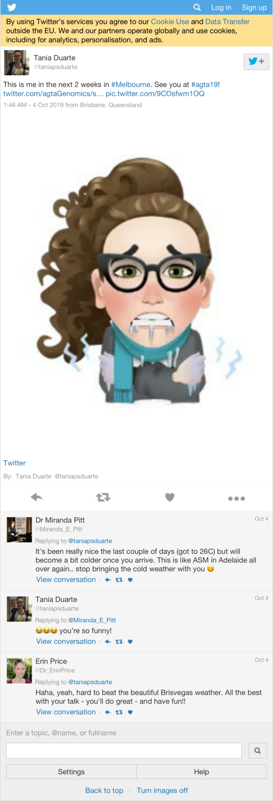
6 Media
Proportion
Top 10
| screen_name | text | favorite_count |
|---|---|---|
| LokeStella | I love this poster. Short and to the point. #agta19 #BAZAM https://t.co/rsLrSz6vtQ | 43 |
| mike_schatz | Really excited to be in Melbourne for the @agtaGenomics conference! Thanks for the invite @AliciaOshlack!!! #agta19 https://t.co/x6VF7CoykV | 37 |
| Miranda_E_Pitt | What on earth is Pandoraea fibrosis?! Come find out at poster 16 #agta19 https://t.co/2DxLyF9eFd | 33 |
| marimiya_tky | Come to poster 31, @Hasindu2008 made a tool on #NVIDIA Jetson running #nanopore data with nanopolish, minimap2, samtool and nanopolish methylation call! #agta19 https://t.co/vlEyhjvysH | 30 |
| taniapsduarte | 1st selfie of the day. Almost lunch time! Group Coin #agta19 https://t.co/8H1jEplr8g | 25 |
| TheRealSmithLab | James Ferguson @Psy_Fer_ presented our recent work building a #bioinformatics toolkit for raw nanopore signal analysis at #AGTA19: use #SquiggleKit to search electric signal for nucleotide motifs. P-values included at no extra cost! https://t.co/wYIjwY1tgV https://t.co/0QJVST4heu | 25 |
| KelPhoto | Enjoying @mike_schatz ‘s tomato talk down under! It’s very saucy! #agta19 https://t.co/IGHco1F8lx | 25 |
| taniapsduarte | Group Coin girl’s night out. Student and ECR #agta19 event @glampcocktailbar. https://t.co/BsDhPPsiMX | 24 |
| LGMartelotto | The path to from data to interpretation of single cells data! #agta2019 https://t.co/mEri86l7FH | 24 |
| taniapsduarte | Nice lanyard #illumina #agta19 https://t.co/yCReyrBEJX | 23 |
6.1 Most liked image

7 Tweet text
7.1 Word cloud
The top 100 words used 3 or more times.
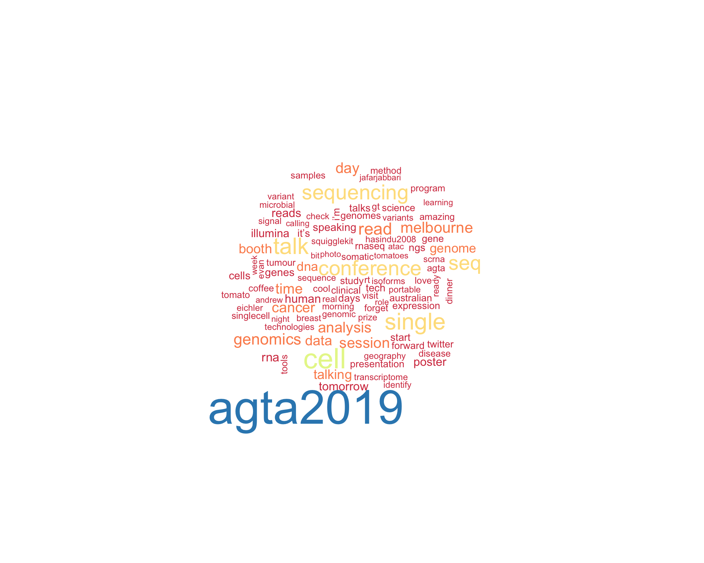
7.3 Emojis
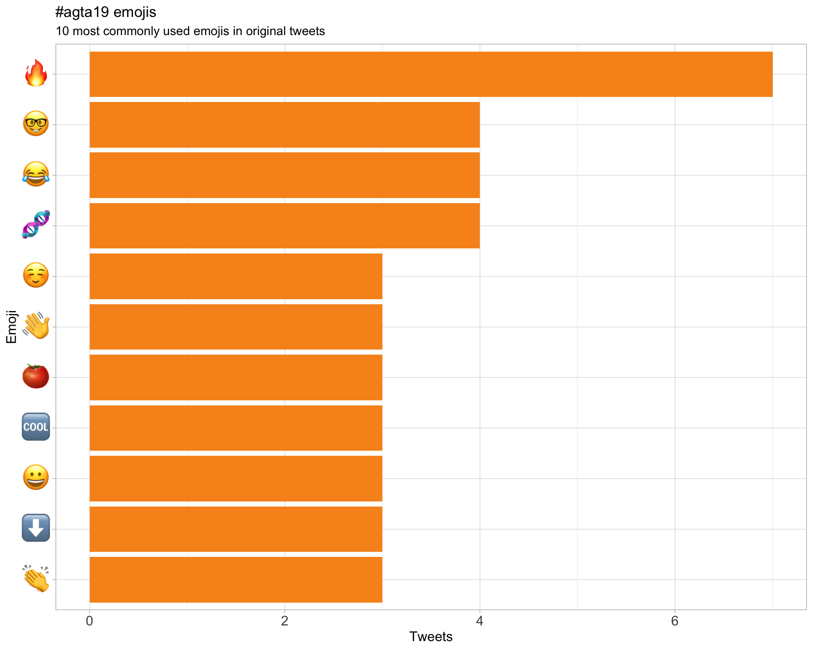
7.4 Bigram graph
Words that were tweeted next to each other at least 3 times.
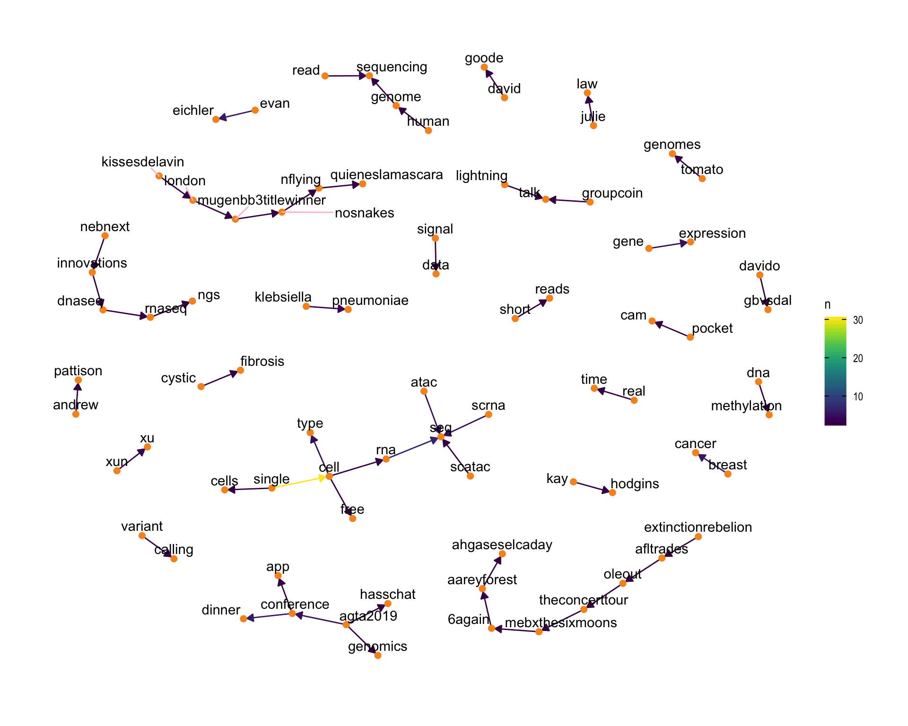
7.5 Topic modelling
Top 10 words associated with 6 topics identified by LDA.
7.5.1 Representative tweets
Most representative tweets for each topic
Topic 1
| screen_name | text | gamma |
|---|---|---|
| ClarksysCorner | Asking if cell-type proportions differ between samples is key question in single cell analysis. Current method limited in taking replicate variation in account (venerable to false +ves). Propeller from @BelindaPhipson a new method to address this #AGTA19 | 0.9935864 |
| hyojns | #NRLGrandFinal #SixAgain #لبناني_يتحرش_بسعوديات #ExtinctionRebellion #NEWMUN #6again #inktoberday6 #MugenRao #ahgaseselcaday #Mugen #WomensTagTitles #เฌอสิค #EAGTPoweredBySafaricom #البصيص_خير_خلف_للفغم #KOT19NT3 #agta19 #BigStage2019 #ClimateChange https://t.co/e1ZpF7wDqr | 0.9925828 |
| ClarksysCorner | Laurence Wilson (CSIRO): chromatin accessibility correlates with CRISPR activity. Open chromatin works better. Created model to better pick target sites by taking into account chromatin accessibility. #AGTA19 | 0.9921746 |
| ClarksysCorner | Combining long-read scRNA-seq & scATAC-seq allows the support of novel or cell-type specific isoform start-sites from the mRNA with the presence of ATAC-seq peaks @shaniAmare #agta19 | 0.9921746 |
| nickomatics | #AGTA2019 starts tomorrow. This is my first conference as a ‘daily’ coffee drinker. I’ve got my keepcup ready (a loaner from friends) and I’m ready for caffeinated genetics from 9am Monday! | 0.9921746 |
| nickomatics | At all good Australian conferences you will find, at the conference dinner, a display of the pinnacle of Australian culture. It is a local dance called ‚ÄòThe Nutbush‚Äô #agta19 did not disappoint. Speaking to my inner tortured primary school student üòá | 0.9921746 |
| EduTweetOz | #agta2019 dinner. Damon Gameau (2040 filmmaker) talking about the frightening statistics that we only have 60 years of topsoil left and in 30 years there will be more plastic in the sea than fish. It’s not all doom and gloom if we can actively #regenerate. | 0.9921746 |
| ClarksysCorner | @jafarjabbari Current this uses a modification of the 10x protocol and utilizes both Illumina and Nanopore sequencing. Illumina reads help identify barcodes used in Nanopore-seq and can also help identify splice sites #Agta19 | 0.9912067 |
| nickomatics | Definitely missed the coffee cart this morning but it’s ok, squishy peak hour trains led to free cold brew outside flinders street station #agta19 | 0.9912067 |
| Psy_Fer_ | Long and short reads for single cell RNAseq and scATAC seq from @shaniAmare from @WEHI_research. Also first up, talking about https://t.co/03Pg7ftqre and awesome database for all the tools you could need for long read Technologies #agta19 https://t.co/E16yOXTcNh | 0.9906271 |
Topic 2
| screen_name | text | gamma |
|---|---|---|
| taniapsduarte | Single cell seq in clinical samples: breast cancer (October is the breast cancer awareness month!) by @dralexswarbrick #agta19 1- tissue at surgery/metastatic biopsy 2- rapid autopsy (Brocade study) 3- single cell seq -250cases of early breast cancer - 1.5 million cells | 0.9952870 |
| nickomatics | Christopher Bye is using iPSCs to study Parkinson’s disease as a living brain model of disease through transplantation into mouse brains, models aged patient neutrons in a disease relevant environment #agta19 | 0.9929505 |
| UMCCR_RADIO_Lab | Also come see Alex Caneborg‚Äôs poster ‚ÄòEstablishing the Gene Signature of Gamma Delta T Cells in Merkel Cell Carcinoma with Single Cell RNA Sequencing‚Äô. He is the alpha of gamma-delta T cells. #AGTA19 @UMCCR üî•üî•üî• | 0.9929505 |
| taniapsduarte | So many new terms I’m learning today: Tumour mutational burden - TMB - no. of nonsynonymous mutations per coding are of the genome. The higher TMB, the better the response to immunotherapy in some tumors. STALLONE works better then WES. By Andrew Pattison #agta19 | 0.9925828 |
| MrMCimino |
Arrived in the beautiful Gold Coast for the @agta2019 conference! Can’t wait for Wednesday and Thursday for my presentations. Cue anxiety that they aren’t good enough and people will think they are a waste of time. #agta2019 #HASSchat |
0.9917188 |
| nickomatics | Prof. Melissa Little has spent most of her career studying kidneys and now has a human pluripotent stem cell derived kidney organoid model to share with us #agta19 | 0.9906271 |
| agtaGenomics | We try to keep #AGTA19 environmentally friendly. Bring your keep cup for coffee - thanks to MGIseq/Decode @MGI_BGI @JoshWarburton2 sponsored coffee cart. Come and hang out, have great coffee and talk about genomics | 0.9899656 |
| janetteedson | I’m missing #agta19 due to @globalbiosummit. Great to see lots of awesome genomics via twitter (thankyou for sharing for those who are elsewhere). And I got to go to Salem today so that makes up missing out, right? https://t.co/jklQVVJpww | 0.9899656 |
| nickomatics | @camerongenomics studies the landscape of genomic rearrangements in metastatic cancer and has part of the landscape to tell us about on over 4500 patient samples with WGS and clinical info #agta19 | 0.9892038 |
| collinsgeogNGS | Oh no!!! We just took the kids on an urban walk and intentionally used a map and NOT our phones to get them learning, not consuming! Where to now? Time for us to collect and reflect!!! #agta2019 https://t.co/yohWvolfvj | 0.9892038 |
Topic 3
| screen_name | text | gamma |
|---|---|---|
| PacBio | Today’s #FF #CSP Spotlight: @ramacgenomics . We’re heading Down Under to recognize the Ramaciotti Centre for Genomics in Sydney, which is the largest Australian university genomics facility. They’ll be at #agta19 next week, and we’re a wee bit jealous… https://t.co/FKDRM0rcC3 https://t.co/HFjmBumPX6 | 0.9932835 |
| TheRealSmithLab | James Ferguson @Psy_Fer_ presented our recent work building a #bioinformatics toolkit for raw nanopore signal analysis at #AGTA19: use #SquiggleKit to search electric signal for nucleotide motifs. P-values included at no extra cost! https://t.co/wYIjwY1tgV https://t.co/0QJVST4heu | 0.9932835 |
| yonghes | justin bieber dick #ExtinctionRebelion #AFLTrades #OleOut #TheConcertTour #MEBxTheSixMoons #6again #AareyForest #ahgaseselcaday #davido #GBvsDAL #agta19 #kiddiemeal #KissesDelavin #London #MugenBB3TitleWinner #NoSnakes #NFlying #quieneslamascara https://t.co/7DFnP0aBAi | 0.9932835 |
| seunqyoun | #ExtinctionRebelion #AFLTrades #OleOut #TheConcertTour #MEBxTheSixMoons #6again #AareyForest #ahgaseselcaday #bts #davido #GBvsDAL #agta19 #kiddiemeal #KCON2019THAILAND  #KissesDelavin #London #MugenBB3TitleWinner #NoSnakes #NFlying #quieneslamascara https://t.co/UPWmJr8Y7a | 0.9929505 |
| Psy_Fer_ | The brilliant @Hasindu2008 from @unsw and @GarvanInstitute talking about portable Genomic analysis, and how relying on Australian internet is just not going to cut it. Minimap2 and nanopolish (f5c) running on mobile phones. Poster 31 #agta19 https://t.co/y2DOUHCk3f | 0.9929505 |
| hyojns | #ExtinctionRebelion #AFLTrades #OleOut #TheConcertTour #MEBxTheSixMoons #6again #AareyForest #ahgaseselcaday #davido #GBvsDAL #agta19 #kiddiemeal #KCON2019THAILAND #KissesDelavin #London #MugenBB3TitleWinner #NoSnakes #NFlying #quieneslamascara https://t.co/L4w2Q20aRV | 0.9925828 |
| ClarksysCorner | Hasindu Gamaarachchi @Hasindu2008 showing how he has developed portable genome analysis methods to go with @nanopore portable genome sequencing. Running Minimap2 and Nanopolish on a mobile phone. Very cool. #agta2019 | 0.9921746 |
| PetrovicFabijan | @Iredell_Lab @theMJA @genomiss @WestmeadInst @Sydney_Uni If you are at #agta19 come and hear my talk (on behalf of @genomiss) on Safety and Efficacy of #phagetherapy: the ’Omics approach from bench to clinical trial, tomorrow at 2.25 pm. | 0.9917188 |
| NanoporeConf | @Psy_Fer_ from @GarvanInstitute is speaking at #AGTA19 tomorrow with his talk ‘SquiggleKit: a toolkit for manipulating nanopore signal data’ - if you’re at AGTA tomorrow, make sure you go along. We’ll also be there, so please do pay our booth a visit for a chat! https://t.co/KW1XAYqs4y | 0.9912067 |
| SeqComplete | #nanopores @NanoporeConf: ‘@Psy_Fer_ from @GarvanInstitute is speaking at #AGTA19 tomorrow with his talk ’SquiggleKit: a toolkit for manipulating nanopore signal data’ - if you’re at AGTA tomorrow, make sure you go alon… https://t.co/1Vw0b9s4Jm, see more https://t.co/QGcZ4oAz3B | 0.9906271 |
Topic 4
| screen_name | text | gamma |
|---|---|---|
| NanoporeConf | The last talk of session 5 tomorrow at #AGTA19 will be given by @river_kano. River’s talk is on ‘Analysis of gene expression and splice isoform variation in the hypoxia response pathway using Nanopore sequencing of human induced pluripotent stem cells’. Don’t miss it! https://t.co/VnlvywD3lT | 0.9938632 |
| NanoporeConf | In session 2 tomorrow, Tania Duarte from the University of Queensland will be speaking at #AGTA19 on ‘Deep sequencing of microbial communities in Cystic Fibrosis airways’ -this one is not to be missed! Why not also come and check out our booth in the break? We’d love to meet you! https://t.co/DN9ScdtJ5H | 0.9932835 |
| NanoporeConf | Miranda Pitt from The University of Queensland will be speaking tomorrow at #AGTA19 in Session 4. Her talk is on ‘Evaluating the “-omes” of extensively drug-resistant klebsiella pneumoniae using native DNA and RNA nanopore sequencing’. Be sure to check it out! https://t.co/ywJG92vhZA | 0.9932835 |
| agtaGenomics | FOMO. Free drinks and food! Hey ECRs and students attending #AGTA19, don’t forget to come along to the social function, Glamp Cocktail Bar on Monday night…it’s not too late to crash the party, https://t.co/niaRc4IKG4 | 0.9929505 |
| taniapsduarte | Now @ClarksysCorner #agta19 with human brain disease topic. “Risk genes play an important role in who develops psychiatric disorders”. Long @nanopore reads can identify alternative isoforms of DNA which are important in neuropsychiatric diseases’ understanding. | 0.9925828 |
| NanoporeConf | If you’re at #AGTA19 on the 7th October, be sure to check out the opening keynote of the conference given by Michael Schatz, who’ll be talking on ‘100 Genomes in 100 days: The structural variant landscape in tomato genomes’. https://t.co/FXoTEOeCEp | 0.9917188 |
| nickomatics | @ClarksysCorner has applied long read sequencing to profile neuropsychiatric genes in human brain, specifically expression and splicing profiling, study how risk genes behave in the risk state #agta19 | 0.9917188 |
| ClarksysCorner | Kay Hodgins telling us about how adaptions to climate differences in plants are polygenic / quantitation traits. Please tell me identifying genetic associations in plants is called a TreeWAS #agta19 | 0.9912067 |
| AliciaOshlack | Bimodal genes selected by @jessicacmar using OncoMix. Reminds me a bit of selecting genes using differential variability by DiffVar method @BelindaPhipson #agta19 https://t.co/hijAKrpeMh | 0.9892038 |
| jess_sci_chang | @taniapsduarte wrapping up the final #groupcoin talk about nanopore sequencing of sputum samples from CF patients and her optimisation of extraction methods! üòä#agta19 https://t.co/vZjCPN9gsj | 0.9892038 |
| nickomatics | Kay Hodgins is an evolutionary biologist working on the super important topic of the genomic basis of climate adaptation. Kicking off the plant session #agta19 | 0.9892038 |
Topic 5
| screen_name | text | gamma |
|---|---|---|
| mscienceaustnz |
Millennium Science is at AGTA! Come visit our booth for lots of giveaways and expert advice on all things genomics ü§ì 7-9 Oct 2019 #millenniumscience #research #lifescience #scientist #stem #agta2019 #genomics #10xgenomics #pacbio #singlecell #genome #longreads #sequencing https://t.co/C7cDauy849 |
0.9941171 |
| MacrogenOceania |
Macrogen Oceania will be present at the 2019 @agtaGenomics conference from the 7th to the 9th October. If you’re attending swing by our booth and fill out our survey for a chance to win a $100 gift card. #AGTA2019 #conference #genomiocs #macrogen https://t.co/JDAOBLwRt7 |
0.9929505 |
| mscienceaustnz |
Booth set up for AGTA 2019 Come visit us for lots of giveaways and expert advice on all things genomics üߨ #millenniumscience #research #lifescience #biotechnology #lablife #agta2019 #genomics #genome #sequencing #10xgenomics #pacbio https://t.co/7tzQkcgdF2 |
0.9929505 |
| idtdna | See us IDT at the #AGTA19 conference in Melbourne next week (Oct. 7-9)! Stop by Booth 11 and chat with our experts about your research. Check out our product line: https://t.co/GlNpmBhogJ #oPools #CRISPR #NGS https://t.co/VYEUNwiJ30 | 0.9921746 |
| taniapsduarte | Learning about üçÖ tomatoes: structural variations play a major role in phenotypic differences (?). By @mike_schatz #agta19 Photo of home grown tomatoes I ate in Portugal this summer. https://t.co/ZsjzRRXPRZ | 0.9917188 |
| ClarksysCorner | Julie Law - DNA methylation in Arabidopsis regulated by Classy family proteins that control which genomic loci polIV acts on to generate siRNAs https://t.co/cD9vlbNcpK #agta19 | 0.9917188 |
| nickomatics | @drdebwilliamson opens day 2 with the changing epidemiology of Shigella and other bacterial STIs in Australia. Integration of epidemiological data with bacterial genomic data for public health. #agta19 | 0.9912067 |
| Psy_Fer_ | Xiao Tan (twitter?) from UQ talking about his cool SpaCell (https://t.co/kg51M4GyXV) for spacial transcriptomics using deep neural networks. Cool! #agta19 https://t.co/DWMkyvvFzK | 0.9906271 |
| ClarksysCorner | Julie Law - Different CLASSY family members function specifically or predominant in different tissues, leading to DNA-methylation silencing of different loci in different plant tissues #agta19 | 0.9906271 |
| dl_goode | Integrating deep mutational scanning data into clinical cancer genomics: MAVERIC is on the job. Great talk by @rubin_af this afternoon at #agta2019 @WEHI_research @agtaGenomics https://t.co/XqabhL4LQD | 0.9906271 |
Topic 6
| screen_name | text | gamma |
|---|---|---|
| MGI_BGI | Excited to be at #AGTA19 Oct. 7-9 in Melbourne, where #BGI Group CEO Dr. Xun Xu will give a keynote Oct. 7. He will highlight our novel technologies to improve #SingleCell analysis and long fragment reads, enabling more complete and accurate human genomes. #MGI #sequencing #NGS https://t.co/Nx95a3H4Go | 0.9945667 |
| alifgems |
Burma Ruby Pigeons Blood Red No heat., No treatment, almost loup clean (no silk, no cloud or any spot) certified by GRS. Contact now WhatsApp +85251621147 https://t.co/tIam9fyTmj sales@alifgems.com #Ruby #burmaruby #agta19 #Antwerp #london #paris #NYC https://t.co/BvZ92wHp1N |
0.9945667 |
| lachlancoin | Amazing tech introduced by Xun Xu, including handheld droplet based single-cell barcoding device (iDrop), antibody based sequencing of natural nucleotides, single-tube long fragment read #AGTA19 | 0.9938632 |
| ARMI_Labs | ARMI Group Leader Professor Jose Polo is just one of many invited speakers at the 2019 Australasian Genomic Technologies Association Conference. Here, Prof Polo discusses dissecting the molecular events during human nuclear reprogramming #agta19 @agtaGenomics https://t.co/3vMz0Qv9rT | 0.9935864 |
| EduTweetOz | Fascinating talk by Jenny Woodward at the #agta2019 breakfast about Australian weather. The BOM is the busiest gov site with over 20 million hits per day. What’s your most used educational website? | 0.9921746 |
| ramacgenomics | @BGI_Genomics Xun Xu speaking @agtaGenomics #AGTA2019 on their new iDrop single cell system and stLFR synthetic long read tech. The iDrop needs no power and is portable! https://t.co/vTeyxzZpHF | 0.9917188 |
| desitweeter | All set up with solutions across gene expression and genotyping workflows, including a human genotyping project competition and end of year promotions! Come visit us - Booth 24 #agta19 #thermofisherscientific #geneticanalysis https://t.co/eTkmrJaTFA | 0.9917188 |
| jess_sci_chang | First #groupcoin talk at #AGTA2019! ‚ÄòDetection of somatic signatures in cell-free DNA samples with low tumour content‚Äô presented by Dr Devika Ganesamoorthy üòÄ @DevikaGanes https://t.co/YCvueV4CIH | 0.9917188 |
| trishief | I really like the term”graphic behaviour” - teaching students to develop graphic behaviour…. how do they present their information? Is it visually appealing? Is it presented in such a way that they would like to look at it? Model this for your students. #agta2019 #geography | 0.9906271 |
| AntoBeck | @BigDataPatto It’s got to be RAMVO… RNA Associated Molecular Variants for Oncology (sorry I couldn’t think of a B and I’ve limited your users to onc field but hey, it’s FFPE) #AGTA19 | 0.9906271 |
8 Links
Links to GitHub, GitLab, BitBucket, Bioconductor or CRAN mentioned in Tweets.
| Name | Tweets | Retweets | Type | Link |
|---|---|---|---|---|
| UNCALLED | 2 | 17 | GitHub | skovaka/uncalled |
| SquiggleKit | 3 | 4 | GitHub | psy-fer/squigglekit |
| SpaCell | 1 | 5 | GitHub | biomedicalmachinelearning/spacell |
| sketchy | 1 | 4 | GitHub | esteinig/sketchy |
| necklace | 1 | 2 | GitHub | oshlack/necklace/wiki |
Session info
## ─ Session info ───────────────────────────────────────────────────────────────
## setting value
## version R version 4.0.0 (2020-04-24)
## os macOS Catalina 10.15.6
## system x86_64, darwin17.0
## ui X11
## language (EN)
## collate en_US.UTF-8
## ctype en_US.UTF-8
## tz Europe/Berlin
## date 2020-09-01
##
## ─ Packages ───────────────────────────────────────────────────────────────────
## package * version date lib source
## askpass 1.1 2019-01-13 [1] CRAN (R 4.0.0)
## assertthat 0.2.1 2019-03-21 [1] CRAN (R 4.0.0)
## backports 1.1.8 2020-06-17 [1] CRAN (R 4.0.0)
## bitops 1.0-6 2013-08-17 [1] CRAN (R 4.0.0)
## callr 3.4.3 2020-03-28 [1] CRAN (R 4.0.0)
## clamour * 0.1.0 2020-09-01 [1] Github (lazappi/clamour@c8ea1c7)
## cli 2.0.2 2020-02-28 [1] CRAN (R 4.0.0)
## colorspace 1.4-1 2019-03-18 [1] CRAN (R 4.0.0)
## crayon 1.3.4 2017-09-16 [1] CRAN (R 4.0.0)
## curl 4.3 2019-12-02 [1] CRAN (R 4.0.0)
## digest 0.6.25 2020-02-23 [1] CRAN (R 4.0.0)
## dplyr * 1.0.1 2020-07-31 [1] CRAN (R 4.0.2)
## ellipsis 0.3.1 2020-05-15 [1] CRAN (R 4.0.0)
## emo * 0.0.0.9000 2020-08-17 [1] Github (hadley/emo@3f03b11)
## evaluate 0.14 2019-05-28 [1] CRAN (R 4.0.0)
## fansi 0.4.1 2020-01-08 [1] CRAN (R 4.0.0)
## farver 2.0.3 2020-01-16 [1] CRAN (R 4.0.0)
## forcats * 0.5.0 2020-03-01 [1] CRAN (R 4.0.0)
## fs * 1.5.0 2020-07-31 [1] CRAN (R 4.0.2)
## generics 0.0.2 2018-11-29 [1] CRAN (R 4.0.0)
## ggforce 0.3.2 2020-06-23 [1] CRAN (R 4.0.2)
## ggplot2 * 3.3.2 2020-06-19 [1] CRAN (R 4.0.2)
## ggraph * 2.0.3 2020-05-20 [1] CRAN (R 4.0.0)
## ggrepel * 0.8.2 2020-03-08 [1] CRAN (R 4.0.0)
## ggtext * 0.1.0 2020-06-04 [1] CRAN (R 4.0.2)
## glue 1.4.1 2020-05-13 [1] CRAN (R 4.0.0)
## graphlayouts 0.7.0 2020-04-25 [1] CRAN (R 4.0.0)
## gridExtra 2.3 2017-09-09 [1] CRAN (R 4.0.0)
## gridtext 0.1.1 2020-02-24 [1] CRAN (R 4.0.2)
## gtable 0.3.0 2019-03-25 [1] CRAN (R 4.0.0)
## here * 0.1 2017-05-28 [1] CRAN (R 4.0.0)
## highr 0.8 2019-03-20 [1] CRAN (R 4.0.0)
## htmltools 0.5.0 2020-06-16 [1] CRAN (R 4.0.0)
## httr 1.4.2 2020-07-20 [1] CRAN (R 4.0.2)
## igraph * 1.2.5 2020-03-19 [1] CRAN (R 4.0.0)
## janeaustenr 0.1.5 2017-06-10 [1] CRAN (R 4.0.0)
## jsonlite 1.7.0 2020-06-25 [1] CRAN (R 4.0.0)
## kableExtra * 1.2.1 2020-08-27 [1] CRAN (R 4.0.2)
## knitr * 1.29 2020-06-23 [1] CRAN (R 4.0.0)
## labeling 0.3 2014-08-23 [1] CRAN (R 4.0.0)
## lattice 0.20-41 2020-04-02 [1] CRAN (R 4.0.0)
## lifecycle 0.2.0 2020-03-06 [1] CRAN (R 4.0.0)
## lubridate * 1.7.9 2020-06-08 [1] CRAN (R 4.0.0)
## magick * 2.4.0 2020-06-23 [1] CRAN (R 4.0.0)
## magrittr 1.5 2014-11-22 [1] CRAN (R 4.0.0)
## markdown 1.1 2019-08-07 [1] CRAN (R 4.0.0)
## MASS 7.3-51.6 2020-04-26 [1] CRAN (R 4.0.0)
## Matrix 1.2-18 2019-11-27 [1] CRAN (R 4.0.0)
## modeltools 0.2-23 2020-03-05 [1] CRAN (R 4.0.0)
## munsell 0.5.0 2018-06-12 [1] CRAN (R 4.0.0)
## NLP 0.2-0 2018-10-18 [1] CRAN (R 4.0.0)
## openssl 1.4.2 2020-06-27 [1] CRAN (R 4.0.0)
## pillar 1.4.6 2020-07-10 [1] CRAN (R 4.0.2)
## pkgconfig 2.0.3 2019-09-22 [1] CRAN (R 4.0.0)
## plyr 1.8.6 2020-03-03 [1] CRAN (R 4.0.0)
## png 0.1-7 2013-12-03 [1] CRAN (R 4.0.0)
## polyclip 1.10-0 2019-03-14 [1] CRAN (R 4.0.0)
## processx 3.4.3 2020-07-05 [1] CRAN (R 4.0.2)
## ps 1.3.3 2020-05-08 [1] CRAN (R 4.0.0)
## purrr * 0.3.4 2020-04-17 [1] CRAN (R 4.0.0)
## R6 2.4.1 2019-11-12 [1] CRAN (R 4.0.0)
## RColorBrewer * 1.1-2 2014-12-07 [1] CRAN (R 4.0.0)
## Rcpp 1.0.5 2020-07-06 [1] CRAN (R 4.0.0)
## RCurl 1.98-1.2 2020-04-18 [1] CRAN (R 4.0.0)
## reshape2 1.4.4 2020-04-09 [1] CRAN (R 4.0.0)
## rlang 0.4.7 2020-07-09 [1] CRAN (R 4.0.2)
## rmarkdown 2.3 2020-06-18 [1] CRAN (R 4.0.0)
## rprojroot 1.3-2 2018-01-03 [1] CRAN (R 4.0.0)
## rstudioapi 0.11 2020-02-07 [1] CRAN (R 4.0.0)
## rtweet * 0.7.0 2020-01-08 [1] CRAN (R 4.0.0)
## rvest * 0.3.6 2020-07-25 [1] CRAN (R 4.0.2)
## scales 1.1.1 2020-05-11 [1] CRAN (R 4.0.0)
## selectr 0.4-2 2019-11-20 [1] CRAN (R 4.0.0)
## sessioninfo 1.1.1 2018-11-05 [1] CRAN (R 4.0.0)
## slam 0.1-47 2019-12-21 [1] CRAN (R 4.0.0)
## SnowballC 0.7.0 2020-04-01 [1] CRAN (R 4.0.0)
## stringi 1.4.6 2020-02-17 [1] CRAN (R 4.0.0)
## stringr * 1.4.0 2019-02-10 [1] CRAN (R 4.0.0)
## tibble 3.0.3 2020-07-10 [1] CRAN (R 4.0.2)
## tidygraph 1.2.0 2020-05-12 [1] CRAN (R 4.0.0)
## tidyr * 1.1.1 2020-07-31 [1] CRAN (R 4.0.2)
## tidyselect 1.1.0 2020-05-11 [1] CRAN (R 4.0.0)
## tidytext * 0.2.5 2020-07-11 [1] CRAN (R 4.0.2)
## tm 0.7-7 2019-12-12 [1] CRAN (R 4.0.0)
## tokenizers 0.2.1 2018-03-29 [1] CRAN (R 4.0.0)
## topicmodels * 0.2-11 2020-04-19 [1] CRAN (R 4.0.0)
## tweenr 1.0.1 2018-12-14 [1] CRAN (R 4.0.0)
## usethis 1.6.1 2020-04-29 [1] CRAN (R 4.0.0)
## utf8 1.1.4 2018-05-24 [1] CRAN (R 4.0.0)
## vctrs 0.3.2 2020-07-15 [1] CRAN (R 4.0.2)
## viridis * 0.5.1 2018-03-29 [1] CRAN (R 4.0.0)
## viridisLite * 0.3.0 2018-02-01 [1] CRAN (R 4.0.0)
## webshot * 0.5.2 2019-11-22 [1] CRAN (R 4.0.0)
## withr 2.2.0 2020-04-20 [1] CRAN (R 4.0.0)
## wordcloud * 2.6 2018-08-24 [1] CRAN (R 4.0.0)
## xfun 0.16 2020-07-24 [1] CRAN (R 4.0.2)
## xml2 * 1.3.2 2020-04-23 [1] CRAN (R 4.0.0)
## yaml 2.2.1 2020-02-01 [1] CRAN (R 4.0.0)
##
## [1] /Library/Frameworks/R.framework/Versions/4.0/Resources/library